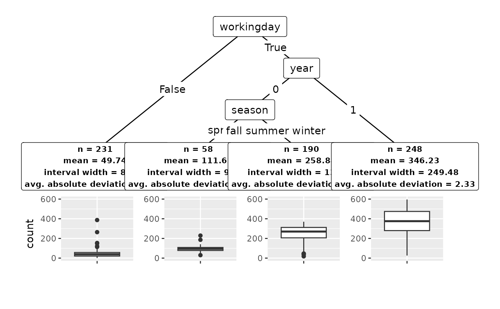
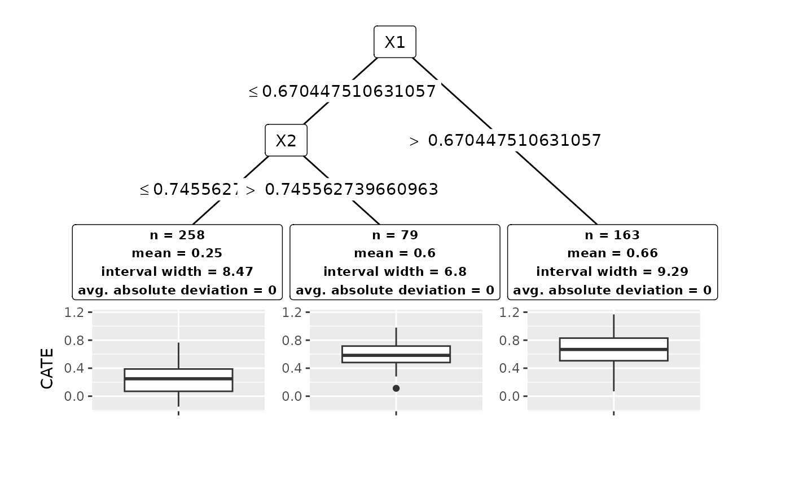

Conformal Trees for Robust Subgroup Detection
conftree.RmdConformal Trees are a method for robust subgroup detection in data
with a single continuous response, framed as either regression or
heterogeneous treatment effect problems. First, the data-generating
process is learned with an arbitrary regression learner from the 100+
algorithms available in tidymodels. Then,
the data is split recursively using a robust criterion that quantifies
the homogeneity in a group by leveraging conformal prediction methods.
conftree implements and extends the theory in Lee
et al. (NeurIPS 2020).
library("conftree")
set.seed(123)Regression
For data with a single continuous outcome and an arbitrary number of numeric or categorical features, we want to identify subgroups where subjects within a group share similar features and outcomes, yet differ markedly from those in other groups.
Data: bike sharing usage in Washington, D.C.
Consider data from the Washington, D.C. bike sharing system. It
contains 727 observations, 10 features and a target variable
count that specifies the total number of bikes lent out to
users on a single given day.
data(bikes, package = "conftree")Select learner
Before we can start, initialize a regression learner from
tidymodels that is used within the algorithm to model the
data-generating process. Let us use a random forest as base learner.
library("tidymodels")
forest <- rand_forest() %>%
set_mode("regression") %>%
set_engine("ranger")Detect subgroups
Subgroups in regression data are detected with r2p(). We
need to specify the data set, the name of the target variable and the
learner object. The argument cv_folds is connected to the
type of uncertainty quantification used for subgroup detection. Setting
cv_folds = 1 runs split conformal prediction (Lei
et al., 2018) and fits one model to 50% of the data while using the
remaining data to construct splits. If cv_folds is set to
an integer of 2 or more, cross validation+ is used, if it is set to the
number of observations in the data, jackknife+ is used (Barber et
al., 2021). Setting alpha = 0.1 implies a 90% coverage
rate of the prediction intervals. The regularization parameter
gamma can be compared to cp in CART and
quantifies the minimum improvement in conformal homogeneity (here: 1%)
required to warrant a split in any given subgroup. The balance parameter
lambda can take values between 0 and 1 and governs the
trade-off between interval width (high values) and average absolute
deviation (low values). The number of maximum groups desired can be set
with max_groups.
groups <- r2p(
data = bikes,
target = "count",
learner = forest,
cv_folds = 1,
alpha = 0.1,
gamma = 0.01,
lambda = 0.5,
max_groups = 3
)Understand results
Printing the conftree object provides a short
description of the decision tree, including features and feature values
used for the splits. Nodes with an asterisk are the final subgroups.
groups
#> Conformal tree with 3 subgroups:
#> [1] root
#> | [2] workingday in False: *
#> | [3] workingday in True
#> | | [4] year in 0: *
#> | | [5] year in 1: *
#> ---
#> * terminal nodes (subgroups)We can get more insights by calling summary(), which
lists the subgroups identified. A subgroup can be characterized by its
center (mean), the average width of the conformal
prediction interval (width) and the average absolute
deviation of outcomes from the group center
(deviation).
summary(groups)
#> Conformal tree with 3 subgroups:
#> n mean width deviation
#> 1 231 49.74 81.96 0.89
#> 2 248 219.79 129.67 19.44
#> 3 248 346.23 249.48 2.33
#> ---
#> Alpha: 0.1 Lambda: 0.5 Gamma: 0.01It is always a good idea to plot results. In conftree,
we provide a way to visualize the decision tree together with the
summary statistics describing the subgroups, including boxplots of the
outcome values within a given subgroup. As we can see, we detect
substantial heterogeneity in the data, with a mean outcome of 49 in one
subgroup and 335 in another. Notably, conformal prediction gives us a
powerful tool to quantify the uncertainty in a subgroup, placing
emphasis on within-group homogeneity and mitigating false discovery of
subgroups in absence of true covariate effects.
plot(groups)
Treatment Effects
We can also detect subgroups in treatment effect problems, where we are data with a single continuous outcome, one or more features, and an additional binary feature that is interpreted as treatment indicator, denoting if an individual belongs to a “treatment” or “control” group. Then, we are interested in detecting heterogeneity in the conditional average treatment effect (CATE), i.e., .
Data: simulate synthetic data
We construct a synthetic example where true treatment effects are
known a priori using the htesim package. The data contains
500 observations and 4 features. Here, the true CATE function is
.
In other words, the CATE does not depend on the other features
and
.
Select learner
In this example, let us try a simple linear regression learner as base learner. Internally, the CATE will be estimated as the difference of two models, , where is trained on treated individuals and on untreated individuals.
linear <- linear_reg() %>%
set_mode("regression") %>%
set_engine("lm")Subgroup detection for treatment effect problems with
r2p_hte() is similar to the regression case. We need to
provide a further argument treatment to specify the name of
the treatment indicator variable. Here, we set
cv_folds = 500 to use jackknife+ for uncertainty
quantification. This involves fitting 1000 linear models, 2 (treatment
and control) for each of the 500 folds that represent the leave-one-out
setting of the jackknife+.
Detect subgroups
groups_hte <- r2p_hte(
data = sim,
target = "y",
learner = linear,
cv_folds = 500,
alpha = 0.1,
gamma = 0.01,
lambda = 0.5,
max_groups = 8,
treatment = "trt"
)Understand results
The plot for treatment effect problems is the same as for regression data, only in that the group center and related statistics are computed by using the CATE estimates of the model.
plot(groups_hte)